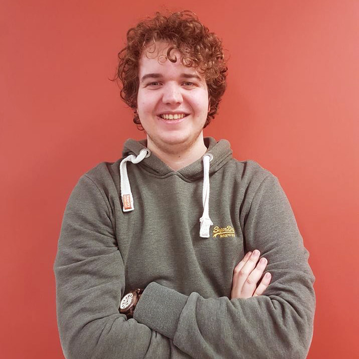

Jens is een echte ondernemer dankzij zijn sociale karakter.
Hij durft tijdens moeilijke beslissingen knopen door te hakken en werkt perfect in team samen.
Dankzij zijn creatieve geest, wordt elke website een lust voor het oog.
Het is zeker en vast fijn om met hem samen te werken.

Robin probeert zijn doelen op een zo realistisch mogelijke manier te benaderen.
Hier boven op staat hij altijd klaar om andere te helpen en om nieuwe dingen bij te leren.
Dankzij zijn verleden in het sociaal werk, draagt hij ook al een hele waslijst aan sociale vaardigheden met zich mee.